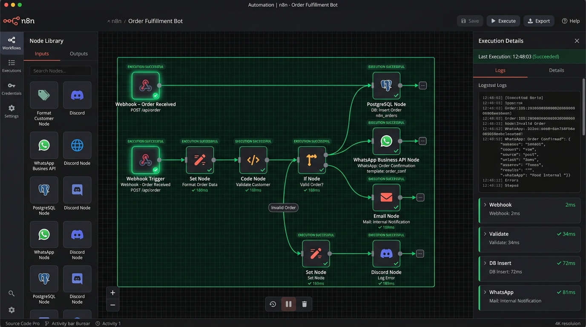

+10,000 تدفق يومي · موثوقية 99.98%
أتمتة مسارات العمل والربط المؤسسي عبر n8n
تخلص من الأعمال الروتينية اليدوية واربط برامجك المنفصلة في نظام متناغم. نصمم ونبني مسارات أتمتة n8n ذات اعتمادية عالية، مع طوابير إعادة محاولة ذكية، وتشفير آمن للـ Webhooks، وإشعارات فورية على تيليجرام وواتساب.
n8n Self-Hosted
Docker & Redis Queues
HMAC Webhook Auth

🔍
تكبير الصورة
مخطط مسار أتمتة حي مع عزل الأخطاء وإعادة المحاولة
أبرز سيناريوهات وحلول الأتمتة
🔄
مزامنة المخزون والطلبات
ربط المتاجر الإلكترونية مع برنامج الحسابات والمخازن وخصم الكميات تلقائياً فور إتمام كل عملية بيع.
🧾
إصدار الفواتير والإيصالات
توليد فواتير PDF تلقائية وإرسالها فوراً للعميل على الواتساب وتسجيل القيود المحاسبية في قاعدة بياناتك.
🚨
التنبيهات الفورية وبوتات الإدارة
إرسال تقارير العمليات الهامة، أو التنبيه عند نقص صنف في المخزون، أو فشل سيرفر إلى قنوات خاصة على تيليجرام.